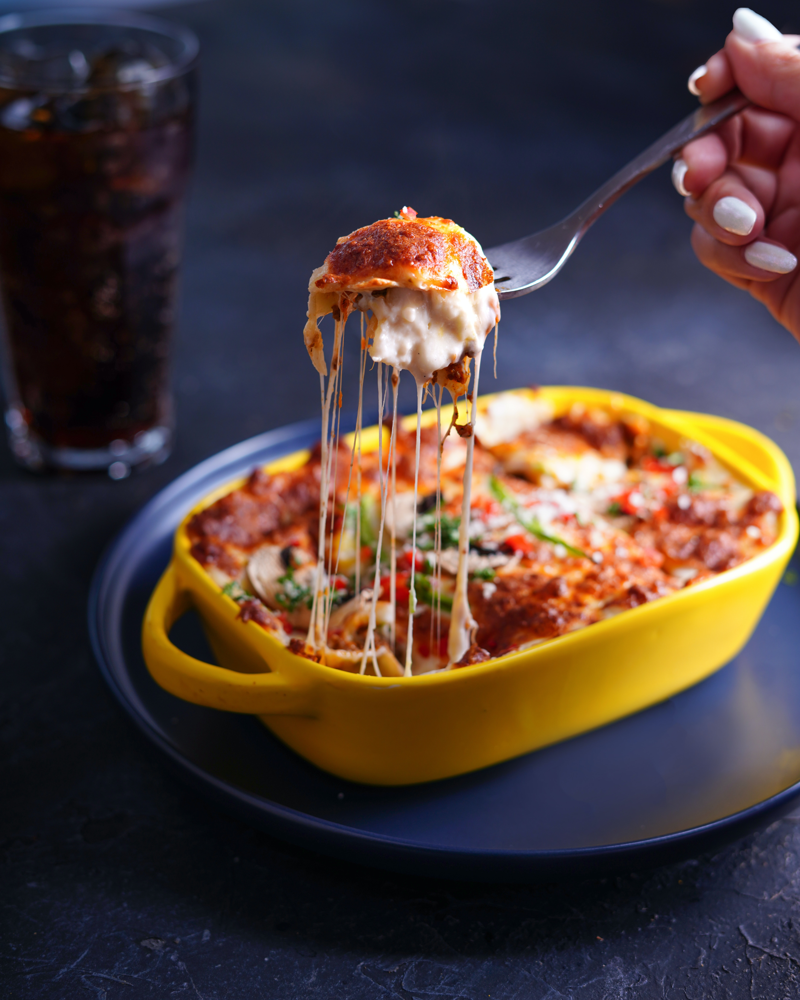

Lasagna


Description
Lasagna is a classic Italian dish made by layering flat pasta sheets with
meat sauce, cheese filling, and tomato sauce, creating a delicious and
comforting meal. It is then baked until the cheese is
melted and golden brown, resulting in a mouthwatering
and satisfying dish.
Ingredients
- lasagna noodles
- meat sauce
- cheese filling
- tomato sauce
- vegetables
- seasoning
Steps
- Preheat the oven to the temperature specified on the lasagna noodle package.
- Cook the lasagna noodles according to the package instruction. Drain and set aside.
- In a large skillet, cook the vegetables until the are tender. You can use a variety
of vegetables like bell peppers, onions, mushrooms, or spinach. Season the vegetables
with salt, pepper, and any additional seasoning you perfer. Remove the vegetables from
the skillet and set aside.
- In the same skillet, cook the meat sauce until the meat is fully cooked. You can use
ground beef, sausage, or a combination of both. Season the meat sauce with salt, pepper,
and any other desired seasoning. Drain any excess fat from the skilett.
- In a seperate bowl prepare the cheese filling. You can use a combination of ricotta cheese,
grated Parmesan cheese, shredded mozerella cheese, and beaten eggs. Mix them together until
well combined.
- Take a baking dish and spread a layer of tomato sauce at the bottom. This will prevent the
lasagna from sticking to the dish.
- Start assembling the lasagna layers. Place a layer of cooked lasagna noodles on top of
the tomato sauce. Spread a portion of the meat sauce over the noodles, followed by a
layer of the cooked vegetables and a layer of the cheese filling. Repeat this process
until all the ingredients are used, ending with a layer of tomato sauce and a
sprinkling of mozarella cheese on top.
- Cover the baking dish with aluminum foil and place it in the preheated oven. Bake
for the time indicated on the lasagna noodle package or until the cheese is melted
and the lasagna is heated through.
- Once the lasagna is cooked, remove it from the oven and let it cool for a few
minutes before serving. This will allow the layers to set and make it easier
to cut and serve.
NOTE:Feel free to adjust the ingredient quantities and
seasoning according to your taste preferences. You can also add additional layers
or ingredients, such as more cheese or herbs, to enchance the flavor.